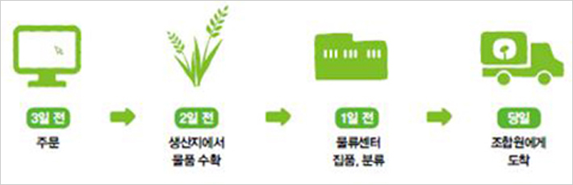

주문공급 안내
주문공급이용 및 결제안내
- 물품주문하기
인터넷 주문 한살림 경기남부 홈페이지
(http://ggnb.hansalim.or.kr),
장보기사이트 또는 모바일앱 클릭 !특별품과 일부 품목은 별도 안내
전화주문 031) 383-1414 월~금요일 오전 9시~오후 6시 마감
- 휴무일 : 설날, 추석, 어린이날, 성탄절, 선거일, 토ㆍ일요일(이 외 다른 법정 공휴일에는 정상적으로 공급, 주문이 이루어집니다.)
- 주문할때 이건 꼭 알아두세요.
- 일1회 주문액이 3만원을 넘지 않으면 공급시 3천원이 부과됩니다.
- 단, 특별품 공급때나 생산지 사정으로 인한 결품시에는 적용하지 않습니다.
- 주소지변경은 주문 마감 전까지 가능합니다.
- 전화 혹은 홈페이지를 통하여 주소지를 변경할수 있습니다.
- 주소지 불일치로 인한 물품 손실액은 조합원이 부담해야합니다.
- 주소 마감 시점의 주소지로 물품이 도착합니다.
- 주문 물품 중 일부가 오지 않을 수 있습니다.
- 한살림의 모든 물품은 한살림 생산자로부터 공급받고 있습니다. 이것은 생산자의 생활을 책임지고자 하는 이유이며 모든 품목은 계획하에 생산되고 있습니다. 채소류를 중심으로 생산현황, 날씨 등에 따라 주문한 물품이 결품 될 수 있습니다.
- 일1회 주문액이 3만원을 넘지 않으면 공급시 3천원이 부과됩니다.
- 공급받기
- 지역별 공급요일과 주문마감 안내
- 지역별 주 2회 공급합니다.
단 시흥지역은 주 1회 공급됩니다.
- 공급일 기준으로 3일전 주문 마감됩니다. (토, 일 제외)
- 공급 당일 부재일 경우 미리 연락주시면, 신선도 유지를 위한 보냉처리를 해드립니다.
공급받는 날 기준으로 3일전 주문이 마감됩니다.
(월, 화요일 공급은 전주 수, 목요일)
3일전 주문공급 시스템은 계획생산된 물품을 안정적으로 공급하는 방법입니다.
- 지역별 주 2회 공급합니다.
- 지역별 공급요일
구분 공급요일 주문마감요일 과천시 화,금 목,화 수원시 영통구(광교외) 월,목 수,월 수원시 권선구 월,목 수,월 수원시 팔달구 월,목 수,월 수원시 장안구 월,수 수,금 수원시 광교지구 월,수 수,금 안양시 화,금 목,화 군포시 월,목 수,월 안산시 화,목 목,월 의왕시 수,금 금,화 시흥시 수 금 주문마감요일 확인하세요!
- 지역별 공급요일과 주문마감 안내
- 물품대금 결제 안내
- 납입방법 : 자동이체 또는 지로 선택
- 물품대금 안내
- 자동이체 이용 시 (CMS)
- CMS 신청방법 : 인터넷 장보기/나의정보/CMS신청하기
- 무통장 입금 시
- 공급받은 후 공급장에 안내된 계좌로 입금
- 현금 영수증은 조합원 상담팀 031)383-1414로 요청(자동발급되지 않음)
- 지로 이용시
- 공급받을 때 공급장과 함께 지로용지를 드립니다.
- 지로용지를 분실한 경우 은행에 비치된 지로용지를 사용하세요.
- 지로번호 : 6344841, 조합원번호, 금액 기재
- 인터넷 지로 http://giro.or.kr
- 지로입금시 입금 확인 3일 ~5일 정도 소요됩니다.
- 지로입금 시 현금영수증 발급되지 않습니다.
- 자동이체 이용 시 (CMS)
- 연체될 경우에는
- 결제가 3주 이상 연체되면 공급 주문이 되지 않습니다.
- 3개월 이상 연체시에는 매장 이용까지 중지됩니다.
- 연체대금 입금 후 연락주시면 바로 주문이 재개됩니다.
- 물품대금계좌 : 기업은행 110-036129-01-033 한살림경기남부
- 장바구니 사용
- 한살림 매장에서는 비닐봉투를 사용하지 않습니다.
- 장보러 나오실때 장바구니를 꼭 챙기세요.
- 장바구니를 준비 못한 조합원은 장바구니를 대여하거나 종이 상자에 담아갈 수 있습니다.
- 물품공급시 이상
- 물품을 공급받은 즉시 공급장과 대조하여 이상이 있거나 물품 상태에 문제가 있을 경우는 조합원 031)383-1414으로 전화해 주세요.
- 반품기준
- 공급을 받으면 수량과 품질을 바로 확인 해 주세요. 냉동물품 반품시에는 냉동상태를 유지하여 반품해주시기 바랍니다.
- 1공급 : 031-383-1414에 연락주시면 방문 또는 환불 처리해드립니다.
- 2인터넷 : 로그인 – 조합원 센터 – 1: 1상담일 이용하시면 확인 후 상담해드립니다.
- 3매장 : 매장에서 구입한 물품은 매장으로 문의바랍니다.
- 일일식품은 24시간 이내에, 그 외물품은 1주일 이내에 상담해야 처리가 가능하며 기간이 지난 후에는 처리가 어렵습니다.
- 농산물, 유정란 등의 품목은 반품 접수 시 품질 개선을 위해 해당 물품의 생산자 이름과 공급일자를 확인하고 알려주세요.
- 반품, 하자 처리가 확인되면 조합원의 물품대금에서 차감해드립니다.
- 조합원 단순변심에 의한 물품공급 취소시 일정금액의 공급취소 수수료가 부과됩니다.
- 공급을 받으면 수량과 품질을 바로 확인 해 주세요. 냉동물품 반품시에는 냉동상태를 유지하여 반품해주시기 바랍니다.
- 한살림의 물품 반품 기준
- 꼭 확인하세요!
- 모든 물품은 공급(구입) 즉시 물품 상태를 확인해주시 바랍니다. 냉동물품 반품시에는 냉동 상태를 유지하여 반품해 주세요.
- 반품 가능
- 주문한 품목이 다름품목으로 공급된 경우
- 물품에 '변질, 불퍈, 파손, 표기오류, 이물혼입, 중량미달 등' 인 경우
- 반품 가능 물품별 접수 기한
- 1일일식품, 패소/과채류, 냉장냉동품, 빵류, 유제품 등 – 공급(구입) 다음 날까지
- 2생활용품, 주잡곡 및 기타-공급(구입)후 7일 이내
특별품과 일부 품목은 별도 안내
- 반품 불가
- 접수 기한이 지난 경우
- 본인의 과실로 물품이 없어지거나 훼손 된 경우
- 개봉하여 이미 사용한 경우
- 사전예약에 의해 한정수량을 발주해 공급한 물품을 단순히 주문자(조합원)의 구매의사가 바뀌었다는 이유로 반품을 요구하는 경우
- 시간이 경과되어 물품가치가 현저히 떨어지는 경우
- 문의 및 접수
- 전화 031- 383-1414 (평일 오전 9시 ~오후 6시)
- 인터넷 : 로그인 → 조합원상담팀 → 1:1 상담
반품처리 완료 후 환불됩니다.
농산물, 유정란 등의 품목은 반품 접수시 품질개선을 위해 해당물품의 생산자 성함을 꼭 알려주시기 바랍니다.
- 꼭 확인하세요!